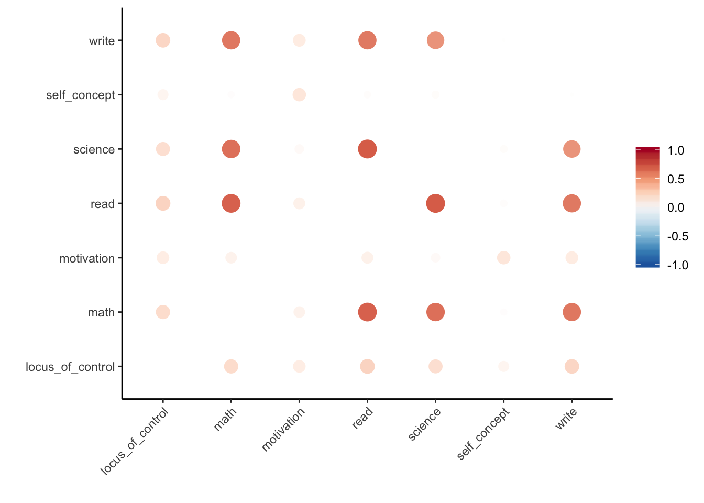
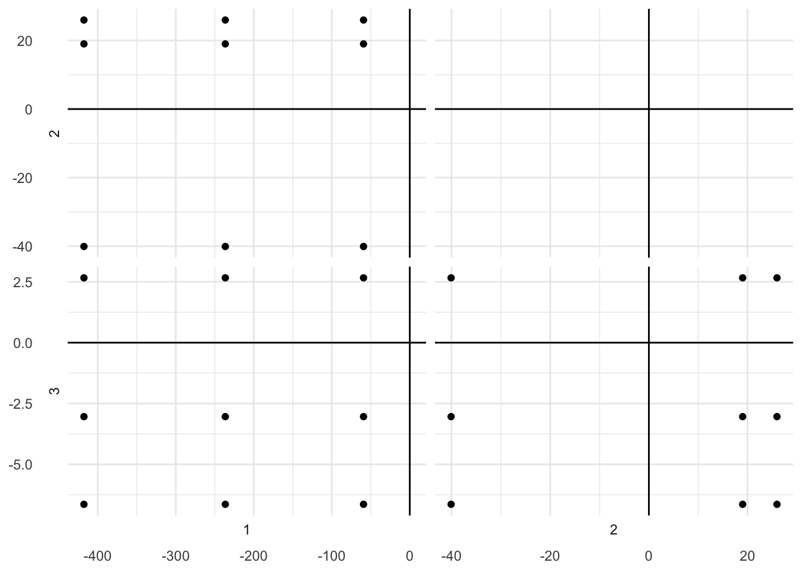
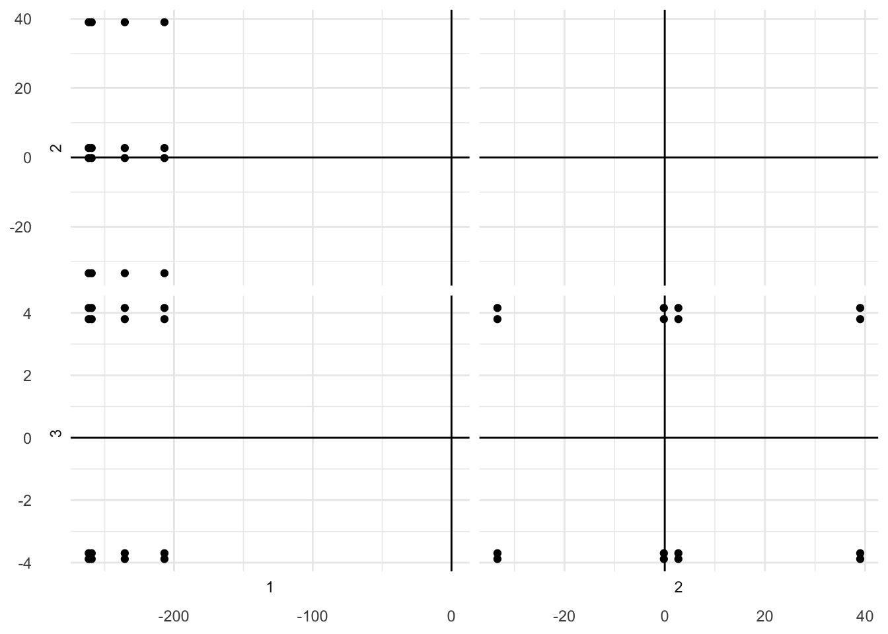

Chapter 5 Partial Least Squares (PLS)
5.1 Description
5.1.1 What is PLS?
Partial Least Squares (PLS) is used to analyze two tables of quantitative. PLS is essentially “data wrangling” followed by PCA.
Data wrangling can include centering and/or scaling of each column of each dataset and then the cross product of the two datasets.
\[SCP = X'Y\]
where \(SCP\) is the sum of cross product, \(X'\) is the transposed matrix of the first dataset, \(Y\) is the matrix of the second dataset.
We can then obtain the latent variables by multiplying each dataset by its respective singular value.
\[ L_X = Xu \] \[ L_Y = Yv \]
The maximum possible number of latent variables is always the least number of columns of either table.
5.2 Example
5.2.1 Data
Let’s use the UCLA dataset.
## locus_of_control self_concept motivation read write math science
## 1 -0.84 -0.24 1.00 54.8 64.5 44.5 52.6
## 2 -0.38 -0.47 0.67 62.7 43.7 44.7 52.6
## 3 0.89 0.59 0.67 60.6 56.7 70.5 58.0
## 4 0.71 0.28 0.67 62.7 56.7 54.7 58.0
## 5 -0.64 0.03 1.00 41.6 46.3 38.4 36.3
## 6 1.11 0.90 0.33 62.7 64.5 61.4 58.05.2.1.1 Descriptive Statistics
## locus_of_control self_concept motivation read write
## Min. :-2.23000 Min. :-2.620000 Min. :0.0000 Min. :28.3 Min. :25.50
## 1st Qu.:-0.37250 1st Qu.:-0.300000 1st Qu.:0.3300 1st Qu.:44.2 1st Qu.:44.30
## Median : 0.21000 Median : 0.030000 Median :0.6700 Median :52.1 Median :54.10
## Mean : 0.09653 Mean : 0.004917 Mean :0.6608 Mean :51.9 Mean :52.38
## 3rd Qu.: 0.51000 3rd Qu.: 0.440000 3rd Qu.:1.0000 3rd Qu.:60.1 3rd Qu.:59.90
## Max. : 1.36000 Max. : 1.190000 Max. :1.0000 Max. :76.0 Max. :67.10
## math science
## Min. :31.80 Min. :26.00
## 1st Qu.:44.50 1st Qu.:44.40
## Median :51.30 Median :52.60
## Mean :51.85 Mean :51.76
## 3rd Qu.:58.38 3rd Qu.:58.65
## Max. :75.50 Max. :74.205.2.1.2 Correlation Matrix
correlate(data) %>%
rplot(colours = rev(RColorBrewer::brewer.pal(9, "RdBu"))) +
theme(axis.text.x = element_text(hjust = 1, angle = 45))##
## Correlation method: 'pearson'
## Missing treated using: 'pairwise.complete.obs'## Don't know how to automatically pick scale for object of type noquote. Defaulting to continuous.
We can see that the personality measures are weakly correlated with each other, while the standardized tests are highly correlated with each other. Also, we can see that Locus of Control is moderately correlated with each of the standardized tests.
5.2.1.3 Split
Let’s split the data into a dataset of personality metrics (\(X\)) and another dataset of the standardized tests (\(Y\)).
## locus_of_control self_concept motivation
## [1,] -0.84 -0.24 1.00
## [2,] -0.38 -0.47 0.67
## [3,] 0.89 0.59 0.67
## [4,] 0.71 0.28 0.67
## [5,] -0.64 0.03 1.00
## [6,] 1.11 0.90 0.33## read write math science
## [1,] 54.8 64.5 44.5 52.6
## [2,] 62.7 43.7 44.7 52.6
## [3,] 60.6 56.7 70.5 58.0
## [4,] 62.7 56.7 54.7 58.0
## [5,] 41.6 46.3 38.4 36.3
## [6,] 62.7 64.5 61.4 58.05.2.4 Factor Scores
## [,1] [,2] [,3]
## locus_of_control -417.77812 19.01029 2.663535
## self_concept -59.30769 25.96956 -6.641973
## motivation -236.51229 -40.09212 -3.039363## Warning: `cols` is now required.
## Please use `cols = c(y)`## Warning: `cols` is now required.
## Please use `cols = c(data_x)`## Warning: `cols` is now required.
## Please use `cols = c(data_y)`
## [,1] [,2] [,3]
## read -259.3939 2.7145460 -3.697377
## write -261.5493 -33.3908501 4.156636
## math -235.5306 -0.1749094 -3.881711
## science -206.9447 38.9979374 3.798954## Warning: `cols` is now required.
## Please use `cols = c(y)`## Warning: `cols` is now required.
## Please use `cols = c(data_x)`## Warning: `cols` is now required.
## Please use `cols = c(data_y)`
5.2.5 Latent Scores
## [,1] [,2] [,3]
## [1,] 0.7654400 -1.4637130 -0.56896322
## [2,] 0.6834717 -0.6237667 0.32105270
## [3,] -1.1371420 0.8357669 -0.31337608
## [4,] -0.8513383 0.5145176 -0.03000207
## [5,] 0.4608174 -1.1600693 -0.79367985
## [6,] -0.9894445 1.9526936 -0.18849546## [,1] [,2] [,3]
## [1,] -0.4841143 -0.7257935 0.96134526
## [2,] 0.2425046 0.7043251 -0.56442103
## [3,] -1.9410240 0.2379724 -0.84734860
## [4,] -1.2353508 0.2546568 -0.10831869
## [5,] 2.2621597 -0.8511297 0.08521605
## [6,] -2.0154595 -0.2686033 -0.034884525.3 Behind-the-Scenes
5.3.1 Wrangling
Let’s center and scale (i.e., z-score) each column in each dataset.
## locus_of_control self_concept motivation
## Min. :-3.4710 Min. :-3.72058 Min. :-1.92815
## 1st Qu.:-0.6998 1st Qu.:-0.43219 1st Qu.:-0.96529
## Median : 0.1693 Median : 0.03555 Median : 0.02675
## Mean : 0.0000 Mean : 0.00000 Mean : 0.00000
## 3rd Qu.: 0.6169 3rd Qu.: 0.61669 3rd Qu.: 0.98960
## Max. : 1.8850 Max. : 1.67975 Max. : 0.98960## read write math science
## Min. :-2.33613 Min. :-2.7641 Min. :-2.12953 Min. :-2.6543
## 1st Qu.:-0.76233 1st Qu.:-0.8312 1st Qu.:-0.78058 1st Qu.:-0.7586
## Median : 0.01961 Median : 0.1763 Median :-0.05831 Median : 0.0862
## Mean : 0.00000 Mean : 0.0000 Mean : 0.00000 Mean : 0.0000
## 3rd Qu.: 0.81146 3rd Qu.: 0.7727 3rd Qu.: 0.69317 3rd Qu.: 0.7095
## Max. : 2.38525 Max. : 1.5129 Max. : 2.51213 Max. : 2.31165.3.2 Sum of Cross Products
## read write math science
## locus_of_control 223.76546 214.96723 202.02413 194.45154
## self_concept 36.33285 11.64969 32.10502 41.82597
## motivation 126.15534 152.29466 116.81307 69.286025.3.5 Factor Scores
## [,1] [,2] [,3]
## [1,] 259.3939 2.7145460 -3.697377
## [2,] 261.5493 -33.3908501 4.156636
## [3,] 235.5306 -0.1749094 -3.881711
## [4,] 206.9447 38.9979374 3.798954## [,1] [,2] [,3]
## [1,] 417.77812 19.01029 2.663535
## [2,] 59.30769 25.96956 -6.641973
## [3,] 236.51229 -40.09212 -3.0393635.3.6 Latent Scores
## [,1] [,2] [,3]
## [1,] -0.7654400 -1.4637130 -0.56896322
## [2,] -0.6834717 -0.6237667 0.32105270
## [3,] 1.1371420 0.8357669 -0.31337608
## [4,] 0.8513383 0.5145176 -0.03000207
## [5,] -0.4608174 -1.1600693 -0.79367985
## [6,] 0.9894445 1.9526936 -0.18849546## [,1] [,2] [,3]
## [1,] 0.4841143 -0.7257935 0.96134526
## [2,] -0.2425046 0.7043251 -0.56442103
## [3,] 1.9410240 0.2379724 -0.84734860
## [4,] 1.2353508 0.2546568 -0.10831869
## [5,] -2.2621597 -0.8511297 0.08521605
## [6,] 2.0154595 -0.2686033 -0.03488452